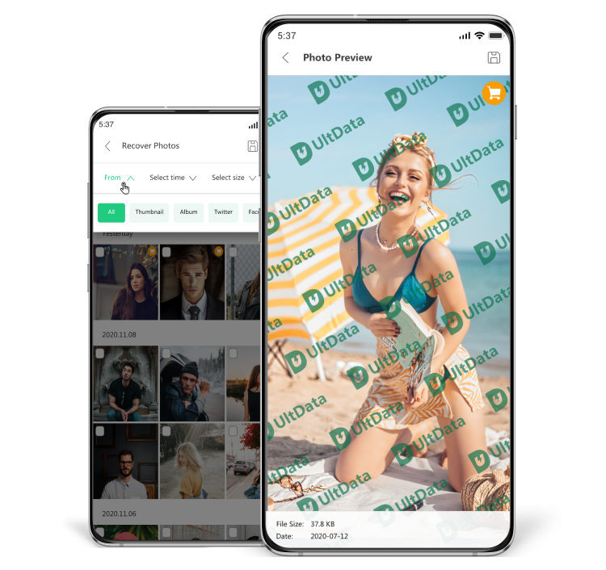
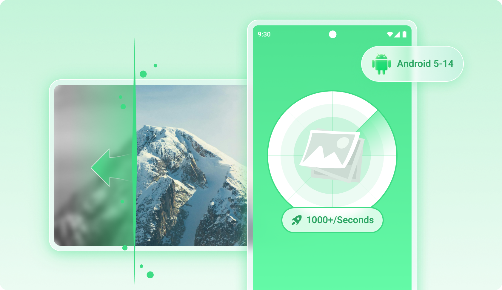
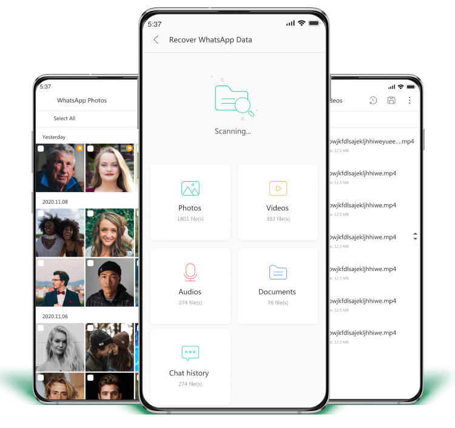

手机删了照片还能找回来？UltData 小白上手全流程
第一次接触数据恢复的你，五分钟搞懂 UltData 怎么用、能帮你找回什么、有哪些边界。从 App 版到桌面端，一步一步带你走通。
这篇能带你从完全不懂到用起来，不需要任何电脑基础、不需要懂技术术语——跟着点就行。
它到底是干嘛的？一个生活化类比
你有没有过这种经历：清理手机相册时手滑删了一张重要的照片，或者 WhatsApp 里的聊天记录被误操作清空了？别急着拍大腿——那些被你"删掉"的文件，其实并没有真的从手机里消失。
打个比方：你去图书馆借书，在系统里点了"归还"，那本书就从你的借阅记录里抹掉了。但书还在书架上，只是被标记成了"可被其他人拿走"。如果新住户还没把它抽走，你去找找看，大概率能翻出来。
UltData 就是帮你"翻书架"的工具，它的官网上对覆盖范围有更详细的列表——它扫描手机存储里那些被标记删除但尚未被覆盖的文件，把它们找出来给你看，确认是你要的就恢复回来。照片、视频、录音、WhatsApp 消息，甚至联系人和短信，都在它的扫描范围内。
五分钟上手：从安装到找回第一张照片
最短路径就是用手机 App 版，连电脑都不用碰：
第一步：去应用商店搜 UltData，或者从官方下载拿安装包，装完打开。
第二步：首页会列出它能帮你恢复的几大类——Photos、Videos、Audio、Documents，点你想要的那一类。比如刚删了照片就点 Photos。
第三步：选择扫描范围。一般选"Scan all"就行，让它全盘扫一遍。手机性能不同，扫描大概需要几十秒到一两分钟，耐心等它跑完。
第四步：扫描结果出来了！所有能找到的照片都会列出来——包括你可能都忘了删过的。每张缩略图都能点进去看大图，确认是你要的就勾选上。
第五步就是恢复了——点 Recover，选一个保存位置，等进度条走完，照片就回来了。
就这么简单。不需要连数据线，不需要开 USB 调试，手机上点五点就搞定。

上手后先玩这三个功能
照片恢复 + AI 增强
这是大多数人装 UltData 的第一理由。你会发现扫描出来的照片质量参差不齐——有些很清晰，有些明显发糊。
别担心，这不是 UltData 在敷衍你，Android 系统就是这么设计的：删除照片后，原始数据有概率被新数据覆盖，没被完全覆盖的就只剩低清的缩略图了。这时候桌面端的 AI Enhance 功能就能派上用场——它能提升锐度、补全边缘，让糊掉的照片至少能看清内容。不过得说清楚，AI 变不出来不存在的细节，真被覆盖没了的部分还是找不回来。

WhatsApp 语音和聊天记录
你可能不知道，UltData 能把 WhatsApp 里被删的语音消息也扫出来。普通的文件管理器根本看不到这些数据——它们存在应用自己的私有数据库里。UltData 用的是 WAL 技术（不用记这个名字，知道它能从数据库日志里把被删的东西捞出来就行）。
App 版能扫，桌面端扫得更完整，能找到更早之前删掉的消息。点开就能直接播放预览，确认内容对再恢复。

桌面端：App 版做不到的事
当 App 版扫不出来你要的东西时，就该让桌面端上场了。它需要用 USB 连电脑，开一下 USB 调试（设置里搜"USB 调试"打开就行），然后让电脑上的 UltData 来接管扫描。
桌面端能做的事 App 版做不了的包括（完整的功能对比可以去ultdata文档查）：恢复联系人、短信、通话记录，还有小米和华为手机上的 WeChat 聊天记录（仅限 Android 12 及以下版本）。如果你换手机忘了备份，桌面端还能从 Google Drive 里选择性地把旧数据导出来，不用重置新手机。
小白的三个常见疑问
为什么恢复的照片不清晰？
这不是 UltData 一家的问题——市面上所有 Android 数据恢复工具都面临同样的限制。原因很简单：Android 相机拍一张照片会同时存两份数据，一份几 MB 的高清原图，一份几百 KB 的低清缩略图。你删照片时，原图被标记为"可覆盖"，但缩略图会留在系统数据库里。UltData 扫描时，原图如果还没被覆盖就能恢复出高清的，被覆盖了就只能用缩略图顶上——这就是为什么模糊。
想提高画质的话，删之前先在相册里浏览过那张照片（系统会缓存更好的缩略图），删完立刻就恢复（越早覆盖的概率越低），以及用桌面端的 AI 增强来提升观感。
App 版和桌面端到底用哪个？
能用 App 版解决的就别碰电脑——这是最省心的原则。刚删了几张照片、误删了一段 WhatsApp 聊天，直接装 App 版扫就行，几秒钟的事。
什么时候该用桌面端？App 版扫不出来你要的类型时。比如 App 版不支持恢复联系人和短信，不支持 WeChat（除了桌面端对部分品牌和版本的支持），这时候就得连电脑上桌面端了。桌面端扫描也比 App 版更深，一些 App 版扫不到的老数据，桌面端能捞出来。
手机中毒了，先杀毒还是先恢复？
先恢复重要数据，再杀毒——这个顺序别搞反。杀毒软件清理病毒时，可能也会把病毒"接触过"的文件一起删掉。所以正确的做法是：立刻用 UltData 把能恢复的数据都备份到电脑上（别写回手机，病毒还在里面），然后放心杀毒。杀完毒再用 UltData 扫一遍，有些之前被病毒干扰扫不到的数据，这时候可能就能扫到了。
如果是勒索病毒把文件加密了，UltData 能扫到这些文件但解不开——这时候先把加密文件备份出来，杀毒后用专门的解密工具处理。
写在最后
数据恢复这件事，记住一个核心原则：越早动手，成功率越高。从你删掉文件的那一刻起，每拍一张新照片、每装一个新 App，都在增加原始数据被覆盖的概率。所以发现丢了就立刻开 UltData 扫，别等。
想更进一步的话，可以试试桌面端的 Google Drive 备份提取功能——换手机时不用重置设备就能选择性地把旧数据导过来，这个功能不少人还没发现。